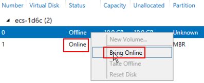
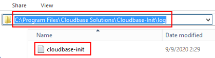

Symptom
A private key cannot be used to obtain the password for logging in to a Windows ECS that is authenticated using a key pair.
Possible Causes
The password fails to inject using Cloudbase-Init due to:
- A network fault, leading to the failure of the connection from the ECS to the Cloudbase-Init server.
- No configuration on the image for Cloudbase-Init to obtain the password.
- Other reasons.
Solution
If logging in to an ECS with Cloudbase-Init enabled failed, perform the following operations to locate the fault:
- Ensure that Cloudbase-Init has been correctly configured on the image that was used to create the ECS.
- Ensure that the key pair for logging in to the ECS is correct.
The key used for obtaining the password must be the key used during the ECS creation.
- Ensure that DHCP is enabled in the VPC to which the ECS belongs.
On the management console, check whether DHCP has been enabled in the target subnet.
- Ensure that the ECS has an EIP bound.
- Ensure that traffic to and from port 80 is allowed in security group rules.
- Check Cloudbase-Init logs to identify the cause.
- Stop the affected ECS and detach the system disk from it.
- Use a public image to create a temporary Windows ECS and attach the system disk detached in 6.a to the ECS.
- Log in to the temporary ECS, open the Server Manager page, choose File and Storage Services > Volumes > Disks, right-click the offline disk, and choose Online from the shortcut menu.
Figure 1 Setting disk online

- Switch to the cloudbase-init file in /Program Files/Cloudbase Solution/Cloudbase-Init/log of this disk to view the log for fault locating.
Figure 2 cloudbase-init
